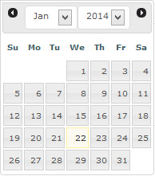
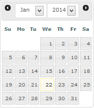

Search Tickets
Overview
Enables searching of tickets. Please read carefully. Click example images to display full size version in new tab/window.
Screenshot
{kind=link}
Basic Search
Keywords or Ticket ID - Enter keywords or ticket ID
Standard Ticket - If checked, searches standard tickets. This is the default.
Dispute - If checked, searches dispute tickets. This ONLY appears if the dispute system is enabled in your settings.
Keywords to also search replies - If selected and keywords are specified, also searches reply text. If you have a large database, this may slow the search routines.
Standard Ticket - If checked, searches standard tickets. This is the default.
Dispute - If checked, searches dispute tickets. This ONLY appears if the dispute system is enabled in your settings.
Keywords to also search replies - If selected and keywords are specified, also searches reply text. If you have a large database, this may slow the search routines.
Date Range
Date From/To - Specify date range for search. Clicking into boxes will launch the date picker.


Filters
Department - Filter search by department.
Priority - Filter search by priority.
Ticket Status - Filter search by status.
Assigned to - Filter search by assignment.
Priority - Filter search by priority.
Ticket Status - Filter search by status.
Assigned to - Filter search by assignment.
Screenshot - Search Results
{kind=link}
Update Search Parameters / Cancel Search
Click buttons to cancel or update search parameters.
Batch Update Operations
Use the checkboxes to check which tickets you would like to batch update, then select the options applicable. Anything set as "No Change" will not be updated.
Export Ticket Stats
Use the checkboxes to check which tickets you would like to export to CSV. This creates a CSV with the following information:
Ticket No (Ticket number)
Created By (The name of the person who created the ticket)
Email (The email of the person who created the ticket)
Created On (Date/time of ticket creation)
First Reply On (Date/time of first reply)
Last Reply On (Date/time of last reply)
First Reply By (Name of person who made the first reply)
Last Reply By (Name of person who made the last reply)
Agents Assigned (Agents assigned - if applicable)
Subject (Subject of ticket)
Department (Department ticket is allocated to)
Ticket Status (Current ticket status)
Reply Status (Current reply status)
Priority (Priority of ticket)
Via (Source where ticket was created. ie: web, API or email)
Is Dispute (Is this a dispute ticket - ONLY if dispute system is enabled)
Total Replies (Total number of replies)
Total History Actions (Total number of history actions)
Ticket No (Ticket number)
Created By (The name of the person who created the ticket)
Email (The email of the person who created the ticket)
Created On (Date/time of ticket creation)
First Reply On (Date/time of first reply)
Last Reply On (Date/time of last reply)
First Reply By (Name of person who made the first reply)
Last Reply By (Name of person who made the last reply)
Agents Assigned (Agents assigned - if applicable)
Subject (Subject of ticket)
Department (Department ticket is allocated to)
Ticket Status (Current ticket status)
Reply Status (Current reply status)
Priority (Priority of ticket)
Via (Source where ticket was created. ie: web, API or email)
Is Dispute (Is this a dispute ticket - ONLY if dispute system is enabled)
Total Replies (Total number of replies)
Total History Actions (Total number of history actions)